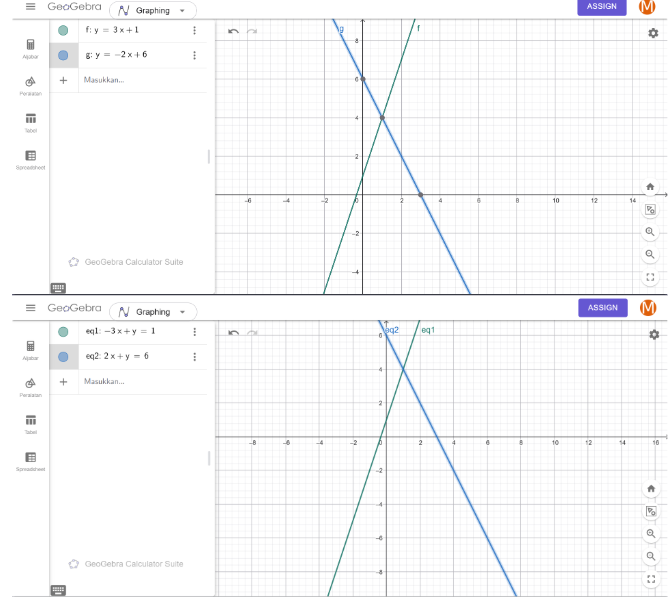

Materi 1#
A. Apa yang Dimaksud dengan Aljabar Linear?#
Selamat datang di materi awal untuk kuliah Komputasi Aljabar Linear. Di halaman ini, kita bakal bahas konsep paling mendasar dari aljabar linear, melihat bentuknya secara visual lewat grafik, dan membuktikannya langsung pakai program Python.
Definisi Aljabar Linear#
Aljabar linear sebenarnya adalah cabang matematika yang fokus mempelajari matriks, vektor, ruang vektor, sistem persamaan linear, beserta transformasi linear yang menghubungkannya. Sederhananya, bidang ini berfokus pada hubungan garis lurus dan struktur matematika yang teratur. Di era sekarang, konsep ini jadi fondasi yang sangat penting di dunia sains, teknik, ilmu komputer, sampai pengembangan machine learning.
Contoh Kasus (Representasi Geometris GeoGebra)#
Misalkan kita punya dua buah persamaan garis linear seperti ini:
Supaya bisa diolah ke dalam format standar Sistem Persamaan Linear (\(Ax = B\)), kita pindahkan variabel \(x\) ke ruas kiri. Hasilnya menjadi:
Kalau diubah ke dalam struktur matriks dan vektor, bentuknya bakal kelihatan seperti ini:
Ketika kedua persamaan garis di atas kita masukkan ke aplikasi GeoGebra, kita bakal melihat visualisasi dua garis lurus yang saling bersilangan: Garis \(g_1\) menggambarkan fungsi linear dari persamaan \(y = 3x + 1\). Garis \(g_2\) menggambarkan fungsi linear dari persamaan \(y = -2x + 0\).
gambar#

Titik Perpotongan: Dua garis tersebut saling memotong tepat di satu titik koordinat tunggal. Dalam aljabar linear, lokasi pertemuan atau titik silang inilah yang menjadi jawaban atau solusi utama dari sistem persamaan tersebut.
Bukti Komputasi Numerik Menggunakan Python (NumPy)#
Sekarang kita buktikan secara pasti berapa koordinat titik potong dari grafik GeoGebra tadi menggunakan library NumPy di Python. Kode ini bakal langsung mencari nilai koordinat \(x\) dan \(y\) yang pas:
code python#
import numpy as np
Matriks Koefisien A#
A = np.array([[-3, 1], [2, 1]])
Vektor Hasil B#
B = np.array([1, 6])
Menyelesaikan persamaan Ax = B untuk mendapatkan koordinat (x, y)#
solusi = np.linalg.solve(A, B)
print(”— BUKTI OUTPUT PYTHON —“) print(“Titik potong berhasil ditemukan:”) print(f”Nilai X = {solusi[0]:.1f}”) print(f”Nilai Y = {solusi[1]:.1f}”) print(f”Koordinat Solusi: ({solusi[0]:.1f}, {solusi[1]:.1f})”)